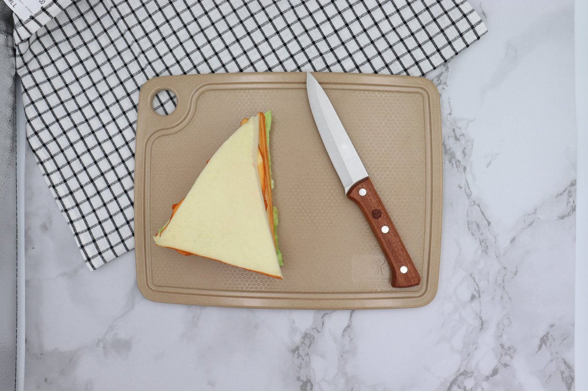

Short answer: same job, different words
A chopping board and a cutting board are the same basic kitchen tool: a flat, durable surface used to prepare food with a knife. There is no functional difference in the product itself. The difference is regional vocabulary, and it is worth getting right because it decides which search term your customer types — and how Google groups your page with theirs.
- ✓Chopping board is the everyday term in the UK, Australia and New Zealand
- ✓Cutting board is the more common term in the United States and Canada
- ✓Search results for the two terms overlap heavily — Google treats them as closely related

Why the word matters for a UK, AU or NZ listing
| Market | Preferred term | Practical implication |
|---|---|---|
| United Kingdom | Chopping board | Use "chopping board" in the title; "cutting board" reads American |
| Australia | Chopping board | Lead with "chopping board"; measurements in cm feel natural |
| New Zealand | Chopping board | Same as Australia; "chopping board" fits local catalogue language |
| United States / Canada | Cutting board | Lead with "cutting board" if you also sell into North America |

Title for the market, not for both at once
Because the two terms are closely related in search, you do not need two near-identical pages — that risks duplicate content. Pick the term your main market uses, use the other naturally in the body once or twice, and keep the spelling local too. In the UK, Australia and New Zealand that means colour and fibre, not the American "color" and "fiber", and dimensions shown in centimetres alongside millimetres. A title like "Rice Husk Chopping Board, 40 × 28 cm" reads naturally to a British or Australian buyer.
A note on spelling across your range
Keep spelling consistent across the whole listing: colour, fibre, centre, organise, catalogue. Mixed British and American spelling on one page looks careless to buyers and dilutes the local signal. We write all of our UK/AU/NZ product copy in British English by default.
Which board should you put behind the listing?
Whichever word you choose, the board underneath has to hold up. Our natural and coloured rice husk boards are SGS-tested for food contact, BPA-free and available in sizes that suit both prep and serving. Ask for the spec sheet, MOQ and sample photos to see which fits your range.